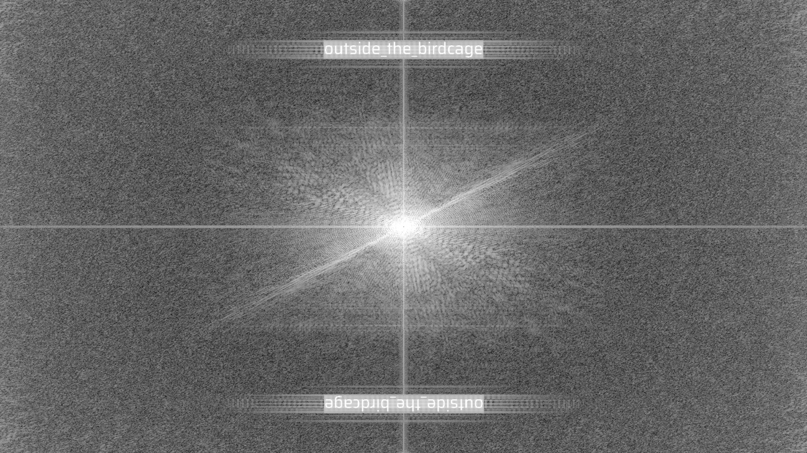

01
SOURCE // CLIENT CODE
ARG ARCHIVE // DECRYPTION RECORD
解谜三群 · 第九章解谜记录
SOURCE // CLIENT CODE
FOURIER TRANSFORM // FFT

13 FRAGMENTS // COMMUNITY ASSEMBLY
CLOCKWISE // YELLOW CELLS
ZERO-WIDTH // MORSE
NIHILIST CIPHER // JUSTENGAGEWTH
FENCE // ZIGZAG READ
ARCHIVE 01 // ILLUSTRATIONS
十二幅 2048×1080 曲绘原图，自客户端纹理逐字节导出。
赏阅、随曲同听，或携原图与音乐一并归去。
ARCHIVE 02 // COLLECTIONS
演绎原画与 503 条收藏品档案全录 —— 每一页都是这场旅途的证词。
ARCHIVE 03 // MUSIC
十二章完整音轨。在线聆听走 AAC 256k 高音质流，下载则奉上未压缩 WAV 原档。
BATCH DOWNLOAD // 一键带走全部声音
ARCHIVE 04 // SOUND FX
52 条客户端音效，原版提取、未做任何处理。
点击即试听 —— 就是游戏里那一声。
FINALE // CREDITS
感谢解谜三群的每一位
名字太多，不如都写进这行字里：
「是我们一起，把这扇门推开的。」